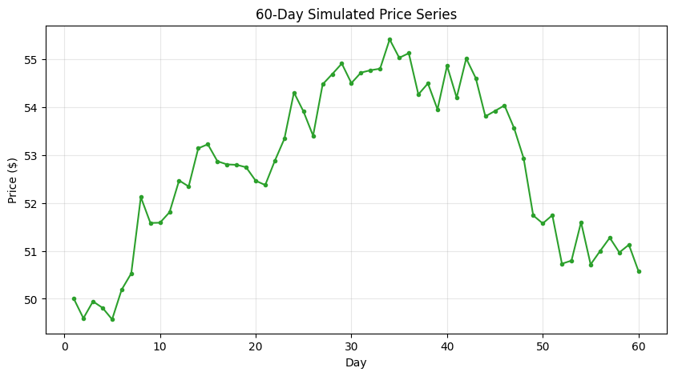
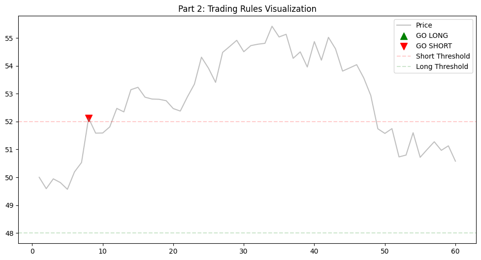
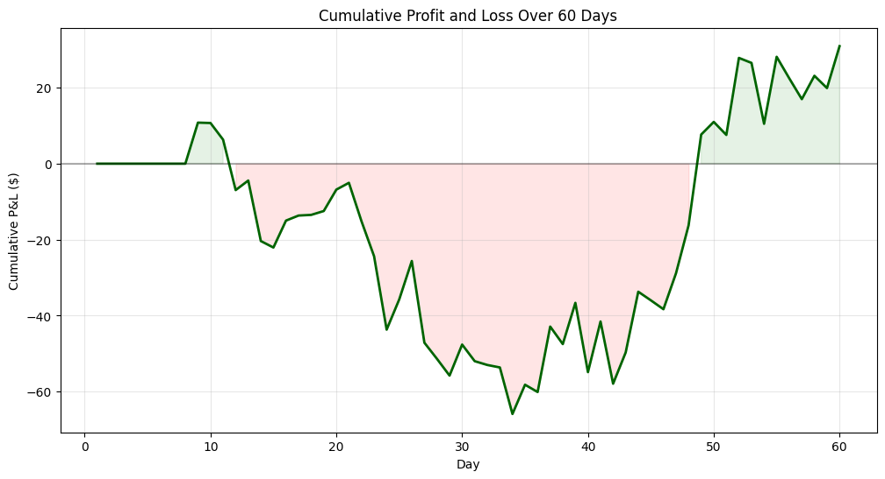
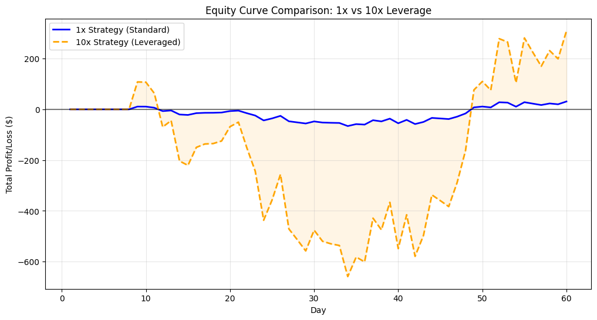
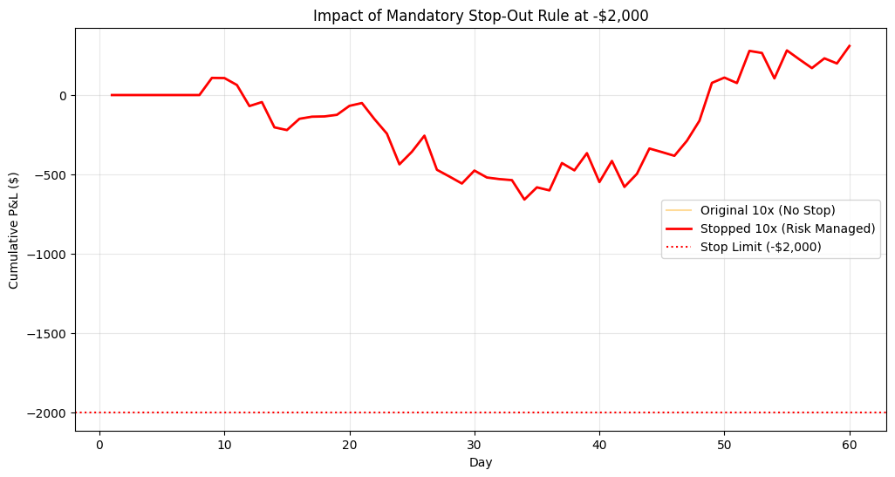
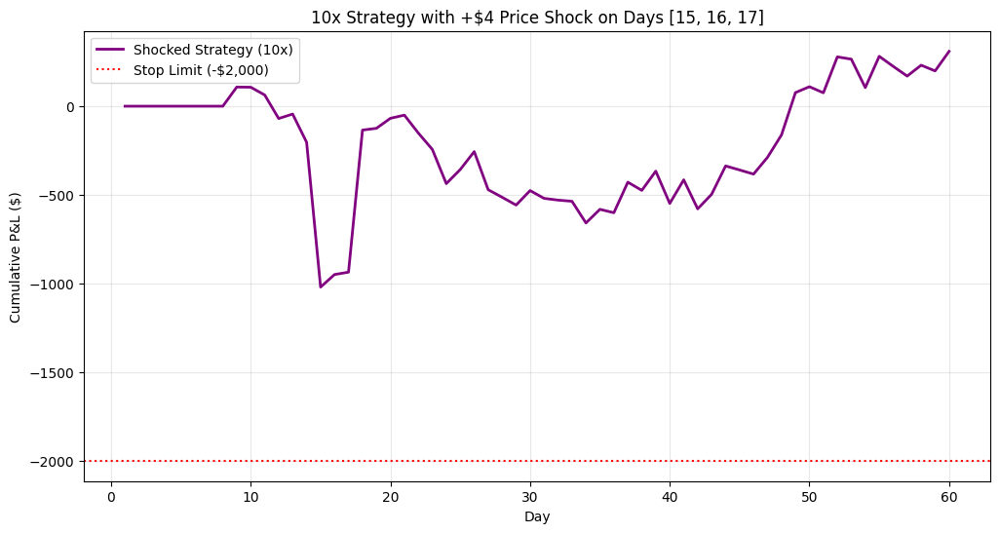

import numpy as np
import pandas as pd
import matplotlib.pyplot as pltPart 0: Conceptual Warm Up
If a strategy is making money 70% of the time, it may seem automatically safe, but this is not necessarily true. A 70% win rate suggests that there is a 30% probability that it is not making money. It may seem logical to choose the strategy because 70% represents a clear majority. However, in a hypothetical example, 70% of the time the strategy may work on a very low-risk basis consistently, where it returns 5% frequently, but when it does not work it may cause a drastic loss, of say -20%. This way of evaluating strategy success is not viable as it does not tell the whole story of risk and analysing the potential upsides and downsides depending on if you are successful or not. Determining whether a strategy is safe depends not only on the frequency of wins, but also on the magnitude of losses, the overall distribution of returns, and the ability to recover from significant losses.
Part 1: Create Your Own Little Market
Below is the hypothetical code I would have run if I had not had an issue with the seed value…
# PERSONAL_SEED = 23 # Personal Seed Reflects My Age
# np.random.seed(PERSONAL_SEED)# 60-day price series starting at 50
# start_price = 50
# days = 60
# noise_volatility = 0.5
# daily_noise = np.random.normal(0, noise_volatility, days)# daily_noise[0] = 0
# prices = start_price + np.cumsum(daily_noise)Reminder about my email - I had an issue with the seed value so am loading in the data here to make it reproducable for the sake off my write-ups that were completed prior to realizing… Thank you for being understanding!
Here is where I loaded in my data that I had written about prior to realising my mistake with the seed values…
import io
data = """Day Price
0 1 50.000000
1 2 49.593192
2 3 49.945004
3 4 49.810933
4 5 49.569653
5 6 50.191958
6 7 50.530388
7 8 52.124140
8 9 51.583857
9 10 51.588972
10 11 51.807887
11 12 52.471780
12 13 52.346208
13 14 53.142763
14 15 53.228172
15 16 52.873545
16 17 52.807033
17 18 52.798354
18 19 52.747808
19 20 52.465788
20 21 52.376270
21 22 52.881800
22 23 53.342298
23 24 54.308843
24 25 53.911161
25 26 53.405393
26 27 54.480783
27 28 54.693353
28 29 54.913929
29 30 54.505209
30 31 54.724156
31 32 54.774017
32 33 54.806720
33 34 55.418936
34 35 55.034136
35 36 55.130196
36 37 54.268569
37 38 54.499199
38 39 53.956516
39 40 54.868205
40 41 54.201773
41 42 55.020469
42 43 54.608999
43 44 53.809945
44 45 53.923201
45 46 54.040150
46 47 53.566538
47 48 52.935750
48 49 51.740817
49 50 51.574180
50 51 51.745939
51 52 50.732008
52 53 50.797717
53 54 51.599334
54 55 50.717177
55 56 51.000429
56 57 51.274823
57 58 50.967255
58 59 51.129028
59 60 50.577431"""
df = pd.read_csv(io.StringIO(data), sep=r'\s\s+', engine='python')# Display first 10 rows
df.head(10)| Day | Price | |
|---|---|---|
| 0 | 1 | 50.000000 |
| 1 | 2 | 49.593192 |
| 2 | 3 | 49.945004 |
| 3 | 4 | 49.810933 |
| 4 | 5 | 49.569653 |
| 5 | 6 | 50.191958 |
| 6 | 7 | 50.530388 |
| 7 | 8 | 52.124140 |
| 8 | 9 | 51.583857 |
| 9 | 10 | 51.588972 |
# Plot series price
plt.figure(figsize=(10, 5))
plt.plot(df['Day'], df['Price'], marker='.', linestyle='-', color='#2ca02c')
plt.title('60-Day Simulated Price Series')
plt.xlabel('Day')
plt.ylabel('Price ($)')
plt.grid(True, alpha=0.3)
plt.show()
I chose the seed value because it is my age, 23 years old (or would have, if things had gone to plan…)
The price on day 20 of my series is roughly $52.46.
My series trends both up and down throughout the 60 day period. As set, the price begins at $50, and begins to trend upwards for the first 35 days, peaking at a price of roughly $55.50. From this point onwards, we then see the price begin to decrease over the remaining 25 days, where the price eventually ends the 60 day period at $50.60. These descriptions of the price change over the 60 day period demonstrates the general trends, however, it is important to know that on a day-to-day basis, there are fluctuations of small increases and decreases that occur. This tells us that although there are general trends occuring over this specific time window, there are still differences on a micro level that are important to consider when analyzing price changes.
If I had to guess tomorrow’s price, I would guess that it is going to be $51. This is because the price over the days prior have fluctuated around that price, and I am expecting that the overall price is going to head on a general trend of increasing as it did that last time it was in the $50-51 price range. However, it is important to understand that this is purely a guess, and to make any further estimations of tomorrow’s price there are better ways of forecasting this.
My chart feels generally pretty calm. This is because over the range of a 60 day period, we see the price fluctuate within a $5.50 range. While we are missing a large amount of context about this price series, I believe that it has remained within a reasonable range despite the general trends discussed prior, as well as the daily price changes. If I were to see the price changing within this range daily and with less consistent upwards or downard trends, we may say that it is volatile, but the small daily changes that create these trends lead me to believe that on the whole it is pretty calm.
Part 2: Invent a Simple Trading Rule
positions = []
actions = []
current_position = 0current_pos = 0 # start with no position
positions = []
actions = []
for price in df["Price"]:
# Apply rule
if price > 52:
desired_pos = -1 # short
elif price < 48:
desired_pos = 1 # long
else:
desired_pos = 0 # hold / flat
# Execute trade only if position changes
if desired_pos == 1 and current_pos != 1:
action = "GO LONG"
current_pos = 1
elif desired_pos == -1 and current_pos != -1:
action = "GO SHORT"
current_pos = -1
else:
action = "HOLD"
positions.append(current_pos)
actions.append(action)df['Position'] = positions
df['Action'] = actionsprint("\n--- Part 2: Full Trading Table ---")
print(df.to_string())
--- Part 2: Full Trading Table ---
Day Price Position Action
0 1 50.000000 0 HOLD
1 2 49.593192 0 HOLD
2 3 49.945004 0 HOLD
3 4 49.810933 0 HOLD
4 5 49.569653 0 HOLD
5 6 50.191958 0 HOLD
6 7 50.530388 0 HOLD
7 8 52.124140 -1 GO SHORT
8 9 51.583857 -1 HOLD
9 10 51.588972 -1 HOLD
10 11 51.807887 -1 HOLD
11 12 52.471780 -1 HOLD
12 13 52.346208 -1 HOLD
13 14 53.142763 -1 HOLD
14 15 53.228172 -1 HOLD
15 16 52.873545 -1 HOLD
16 17 52.807033 -1 HOLD
17 18 52.798354 -1 HOLD
18 19 52.747808 -1 HOLD
19 20 52.465788 -1 HOLD
20 21 52.376270 -1 HOLD
21 22 52.881800 -1 HOLD
22 23 53.342298 -1 HOLD
23 24 54.308843 -1 HOLD
24 25 53.911161 -1 HOLD
25 26 53.405393 -1 HOLD
26 27 54.480783 -1 HOLD
27 28 54.693353 -1 HOLD
28 29 54.913929 -1 HOLD
29 30 54.505209 -1 HOLD
30 31 54.724156 -1 HOLD
31 32 54.774017 -1 HOLD
32 33 54.806720 -1 HOLD
33 34 55.418936 -1 HOLD
34 35 55.034136 -1 HOLD
35 36 55.130196 -1 HOLD
36 37 54.268569 -1 HOLD
37 38 54.499199 -1 HOLD
38 39 53.956516 -1 HOLD
39 40 54.868205 -1 HOLD
40 41 54.201773 -1 HOLD
41 42 55.020469 -1 HOLD
42 43 54.608999 -1 HOLD
43 44 53.809945 -1 HOLD
44 45 53.923201 -1 HOLD
45 46 54.040150 -1 HOLD
46 47 53.566538 -1 HOLD
47 48 52.935750 -1 HOLD
48 49 51.740817 -1 HOLD
49 50 51.574180 -1 HOLD
50 51 51.745939 -1 HOLD
51 52 50.732008 -1 HOLD
52 53 50.797717 -1 HOLD
53 54 51.599334 -1 HOLD
54 55 50.717177 -1 HOLD
55 56 51.000429 -1 HOLD
56 57 51.274823 -1 HOLD
57 58 50.967255 -1 HOLD
58 59 51.129028 -1 HOLD
59 60 50.577431 -1 HOLD# Plot with Buy/Sell Markers
plt.figure(figsize=(12, 6))
plt.plot(df['Day'], df['Price'], color='gray', alpha=0.5, label='Price')
# Identify markers for the plot
buys = df[df['Action'] == "GO LONG"]
sells = df[df['Action'] == "GO SHORT"]
plt.scatter(buys['Day'], buys['Price'], color='green', marker='^', label='GO LONG', s=100)
plt.scatter(sells['Day'], sells['Price'], color='red', marker='v', label='GO SHORT', s=100)
plt.axhline(52, color='red', linestyle='--', alpha=0.2, label='Short Threshold')
plt.axhline(48, color='green', linestyle='--', alpha=0.2, label='Long Threshold')
plt.title('Part 2: Trading Rules Visualization')
plt.legend()
plt.show()
num_trades = df[df['Action'] != 'HOLD'].shape[0]
num_longs = df[df['Action'] == 'GO LONG'].shape[0]
num_shorts = df[df['Action'] == 'GO SHORT'].shape[0]
print(f"You made a total of {num_trades} trades (excluding 'HOLD' actions).")
print(f" - {num_longs} 'GO LONG' trades")
print(f" - {num_shorts} 'GO SHORT' trades")You made a total of 1 trades (excluding 'HOLD' actions).
- 0 'GO LONG' trades
- 1 'GO SHORT' tradesI made my first trade on day 8, where I shorted at the price of $52.12.
I made 1 ‘GO SHORT’ trade, which accounted for all of the total trades that I made. There were no ‘GO LONG’ trades made.
Honestly, no. This rule did not feel reasonable for this series as there was only one short position and no long positions taken at all. There were no points where the price dropped below $48, so the long position was never triggered. Additonally, there was a prolonged period of time after the short where the position occured losses, without a clear exit stretegy. The strategy was stuck in lopsided exposure to the short. The overall performance was due to a significant recovery, but this is not a reproducable account of what may happen if this rule was to be repeated. This strategy succeeded only due to the trend reversal before the loses became too big.
Since that there were only short values taken above the $52 dollar price range, the short position looked poorly timed as it occured at a period of time where there was a sustained upwards trend. As the price continued to rise, the position experienced a significant losses (entered at $52.12m peaked at $55.42, representing a $3.30 adverse move) before eventually reversing. While there was only one short trade, it was exposed to long-term trend risk as the price continued to rise for several weeks after the short was made, meaning there was unrealized loss before eventuall reversing.
Part 3: Turn Actions Into Money
# Calculate Daily P&L
# Exposure is $1,000 per unit (Position 1 = $1000, Position -1 = -$1000)
exposure = 1000
# Daily Price Change: Price(today) - Price(yesterday)
df['Price_Change'] = df['Price'].diff()
# Daily P&L = Position(yesterday) * Price_Change(today) * (Exposure / StartPrice)
df['Daily_PnL'] = df['Position'].shift(1) * df['Price_Change'] * (exposure / 50)
df['Daily_PnL'] = df['Daily_PnL'].fillna(0) # First day has no P&L
# Calculate Cumulative P&L
df['Cumulative_PnL'] = df['Daily_PnL'].cumsum()
# Table displaying results for all 60 days
print("\n--- PART 3: Full Financial Results ---")
pd.set_option('display.max_rows', None) # Ensure all 60 days print
print(df[['Day', 'Price', 'Position', 'Action', 'Daily_PnL', 'Cumulative_PnL']].to_string(index=False))
--- PART 3: Full Financial Results ---
Day Price Position Action Daily_PnL Cumulative_PnL
1 50.000000 0 HOLD 0.00000 0.00000
2 49.593192 0 HOLD -0.00000 0.00000
3 49.945004 0 HOLD 0.00000 0.00000
4 49.810933 0 HOLD -0.00000 0.00000
5 49.569653 0 HOLD -0.00000 0.00000
6 50.191958 0 HOLD 0.00000 0.00000
7 50.530388 0 HOLD 0.00000 0.00000
8 52.124140 -1 GO SHORT 0.00000 0.00000
9 51.583857 -1 HOLD 10.80566 10.80566
10 51.588972 -1 HOLD -0.10230 10.70336
11 51.807887 -1 HOLD -4.37830 6.32506
12 52.471780 -1 HOLD -13.27786 -6.95280
13 52.346208 -1 HOLD 2.51144 -4.44136
14 53.142763 -1 HOLD -15.93110 -20.37246
15 53.228172 -1 HOLD -1.70818 -22.08064
16 52.873545 -1 HOLD 7.09254 -14.98810
17 52.807033 -1 HOLD 1.33024 -13.65786
18 52.798354 -1 HOLD 0.17358 -13.48428
19 52.747808 -1 HOLD 1.01092 -12.47336
20 52.465788 -1 HOLD 5.64040 -6.83296
21 52.376270 -1 HOLD 1.79036 -5.04260
22 52.881800 -1 HOLD -10.11060 -15.15320
23 53.342298 -1 HOLD -9.20996 -24.36316
24 54.308843 -1 HOLD -19.33090 -43.69406
25 53.911161 -1 HOLD 7.95364 -35.74042
26 53.405393 -1 HOLD 10.11536 -25.62506
27 54.480783 -1 HOLD -21.50780 -47.13286
28 54.693353 -1 HOLD -4.25140 -51.38426
29 54.913929 -1 HOLD -4.41152 -55.79578
30 54.505209 -1 HOLD 8.17440 -47.62138
31 54.724156 -1 HOLD -4.37894 -52.00032
32 54.774017 -1 HOLD -0.99722 -52.99754
33 54.806720 -1 HOLD -0.65406 -53.65160
34 55.418936 -1 HOLD -12.24432 -65.89592
35 55.034136 -1 HOLD 7.69600 -58.19992
36 55.130196 -1 HOLD -1.92120 -60.12112
37 54.268569 -1 HOLD 17.23254 -42.88858
38 54.499199 -1 HOLD -4.61260 -47.50118
39 53.956516 -1 HOLD 10.85366 -36.64752
40 54.868205 -1 HOLD -18.23378 -54.88130
41 54.201773 -1 HOLD 13.32864 -41.55266
42 55.020469 -1 HOLD -16.37392 -57.92658
43 54.608999 -1 HOLD 8.22940 -49.69718
44 53.809945 -1 HOLD 15.98108 -33.71610
45 53.923201 -1 HOLD -2.26512 -35.98122
46 54.040150 -1 HOLD -2.33898 -38.32020
47 53.566538 -1 HOLD 9.47224 -28.84796
48 52.935750 -1 HOLD 12.61576 -16.23220
49 51.740817 -1 HOLD 23.89866 7.66646
50 51.574180 -1 HOLD 3.33274 10.99920
51 51.745939 -1 HOLD -3.43518 7.56402
52 50.732008 -1 HOLD 20.27862 27.84264
53 50.797717 -1 HOLD -1.31418 26.52846
54 51.599334 -1 HOLD -16.03234 10.49612
55 50.717177 -1 HOLD 17.64314 28.13926
56 51.000429 -1 HOLD -5.66504 22.47422
57 51.274823 -1 HOLD -5.48788 16.98634
58 50.967255 -1 HOLD 6.15136 23.13770
59 51.129028 -1 HOLD -3.23546 19.90224
60 50.577431 -1 HOLD 11.03194 30.93418# Plot of Cumulative P&L
plt.figure(figsize=(12, 6))
plt.plot(df['Day'], df['Cumulative_PnL'], color='darkgreen', linewidth=2)
plt.axhline(0, color='black', linestyle='-', alpha=0.3)
plt.title('Cumulative Profit and Loss Over 60 Days')
plt.xlabel('Day')
plt.ylabel('Cumulative P&L ($)')
plt.grid(True, alpha=0.3)
plt.fill_between(df['Day'], df['Cumulative_PnL'], 0, where=(df['Cumulative_PnL'] >= 0), color='green', alpha=0.1)
plt.fill_between(df['Day'], df['Cumulative_PnL'], 0, where=(df['Cumulative_PnL'] < 0), color='red', alpha=0.1)
plt.show()
By day 30, I was down $-47.62 dollars.
My final cummulative profit was $30.93, which shows that I made a substantial recovery of close to $80 dollars by the time I reached day 60. This recovery is important because it shows that I was able to recovery to from a deficit 2x as larged as the final profits, suggesting that the final outcome for this time window is purely down to timing of when the window ends. If the window had ended on day 34, there would be a very different outcome. This shows that this trading is highly path dependent and depends when the sample ends
Yes, I experienced a very significant losing streak for 36 days straight. It started at day 12, where my cummulative profits went below $0 for the first time at a value of $-6.95, reaching its biggest cummualtive loss in day 34, where the price was $-65.89. The last day in a loss was day 48, where the price was at a loss of $-16.23. On day 49, the price then became positive again and remained so for the rest of this price window.
Overall, the strategy saw a maximum drawdown of $-65.89, and ended up ultimately earning $30.93, meaning the maximum loss was more than twice the final profits. While the overall startegy worked, the combination of time in loss and signficant bounceback to be profitable by the end of the window shows their is limited risk control and future outcomes are fragile.
Part 4: Add Leverage
# Calculate 10x Exposure
leverage_factor = 10
exposure_1x = 1000
exposure_10x = exposure_1x * leverage_factor
# Calculate Daily and Cumulative P&L for both versions
# Using (exposure / 50) as the multiplier for price movement points
multiplier_1x = exposure_1x / 50
multiplier_10x = exposure_10x / 50
# P&L 1x
df['Daily_PnL_1x'] = df['Position'].shift(1) * df['Price_Change'] * multiplier_1x
df['Daily_PnL_1x'] = df['Daily_PnL_1x'].fillna(0)
df['Cumulative_PnL_1x'] = df['Daily_PnL_1x'].cumsum()
# P&L 10x
df['Daily_PnL_10x'] = df['Position'].shift(1) * df['Price_Change'] * multiplier_10x
df['Daily_PnL_10x'] = df['Daily_PnL_10x'].fillna(0)
df['Cumulative_PnL_10x'] = df['Daily_PnL_10x'].cumsum()# Table displaying results for all 60 days including both 1x and 10x
print("\n--- PART 4: Full Leveraged Results (1x vs 10x) ---")
cols_to_show = ['Day', 'Price', 'Position', 'Daily_PnL_1x', 'Cumulative_PnL_1x', 'Daily_PnL_10x', 'Cumulative_PnL_10x']
print(df[cols_to_show].to_string(index=False))
--- PART 4: Full Leveraged Results (1x vs 10x) ---
Day Price Position Daily_PnL_1x Cumulative_PnL_1x Daily_PnL_10x Cumulative_PnL_10x
1 50.000000 0 0.00000 0.00000 0.0000 0.0000
2 49.593192 0 -0.00000 0.00000 -0.0000 0.0000
3 49.945004 0 0.00000 0.00000 0.0000 0.0000
4 49.810933 0 -0.00000 0.00000 -0.0000 0.0000
5 49.569653 0 -0.00000 0.00000 -0.0000 0.0000
6 50.191958 0 0.00000 0.00000 0.0000 0.0000
7 50.530388 0 0.00000 0.00000 0.0000 0.0000
8 52.124140 -1 0.00000 0.00000 0.0000 0.0000
9 51.583857 -1 10.80566 10.80566 108.0566 108.0566
10 51.588972 -1 -0.10230 10.70336 -1.0230 107.0336
11 51.807887 -1 -4.37830 6.32506 -43.7830 63.2506
12 52.471780 -1 -13.27786 -6.95280 -132.7786 -69.5280
13 52.346208 -1 2.51144 -4.44136 25.1144 -44.4136
14 53.142763 -1 -15.93110 -20.37246 -159.3110 -203.7246
15 53.228172 -1 -1.70818 -22.08064 -17.0818 -220.8064
16 52.873545 -1 7.09254 -14.98810 70.9254 -149.8810
17 52.807033 -1 1.33024 -13.65786 13.3024 -136.5786
18 52.798354 -1 0.17358 -13.48428 1.7358 -134.8428
19 52.747808 -1 1.01092 -12.47336 10.1092 -124.7336
20 52.465788 -1 5.64040 -6.83296 56.4040 -68.3296
21 52.376270 -1 1.79036 -5.04260 17.9036 -50.4260
22 52.881800 -1 -10.11060 -15.15320 -101.1060 -151.5320
23 53.342298 -1 -9.20996 -24.36316 -92.0996 -243.6316
24 54.308843 -1 -19.33090 -43.69406 -193.3090 -436.9406
25 53.911161 -1 7.95364 -35.74042 79.5364 -357.4042
26 53.405393 -1 10.11536 -25.62506 101.1536 -256.2506
27 54.480783 -1 -21.50780 -47.13286 -215.0780 -471.3286
28 54.693353 -1 -4.25140 -51.38426 -42.5140 -513.8426
29 54.913929 -1 -4.41152 -55.79578 -44.1152 -557.9578
30 54.505209 -1 8.17440 -47.62138 81.7440 -476.2138
31 54.724156 -1 -4.37894 -52.00032 -43.7894 -520.0032
32 54.774017 -1 -0.99722 -52.99754 -9.9722 -529.9754
33 54.806720 -1 -0.65406 -53.65160 -6.5406 -536.5160
34 55.418936 -1 -12.24432 -65.89592 -122.4432 -658.9592
35 55.034136 -1 7.69600 -58.19992 76.9600 -581.9992
36 55.130196 -1 -1.92120 -60.12112 -19.2120 -601.2112
37 54.268569 -1 17.23254 -42.88858 172.3254 -428.8858
38 54.499199 -1 -4.61260 -47.50118 -46.1260 -475.0118
39 53.956516 -1 10.85366 -36.64752 108.5366 -366.4752
40 54.868205 -1 -18.23378 -54.88130 -182.3378 -548.8130
41 54.201773 -1 13.32864 -41.55266 133.2864 -415.5266
42 55.020469 -1 -16.37392 -57.92658 -163.7392 -579.2658
43 54.608999 -1 8.22940 -49.69718 82.2940 -496.9718
44 53.809945 -1 15.98108 -33.71610 159.8108 -337.1610
45 53.923201 -1 -2.26512 -35.98122 -22.6512 -359.8122
46 54.040150 -1 -2.33898 -38.32020 -23.3898 -383.2020
47 53.566538 -1 9.47224 -28.84796 94.7224 -288.4796
48 52.935750 -1 12.61576 -16.23220 126.1576 -162.3220
49 51.740817 -1 23.89866 7.66646 238.9866 76.6646
50 51.574180 -1 3.33274 10.99920 33.3274 109.9920
51 51.745939 -1 -3.43518 7.56402 -34.3518 75.6402
52 50.732008 -1 20.27862 27.84264 202.7862 278.4264
53 50.797717 -1 -1.31418 26.52846 -13.1418 265.2846
54 51.599334 -1 -16.03234 10.49612 -160.3234 104.9612
55 50.717177 -1 17.64314 28.13926 176.4314 281.3926
56 51.000429 -1 -5.66504 22.47422 -56.6504 224.7422
57 51.274823 -1 -5.48788 16.98634 -54.8788 169.8634
58 50.967255 -1 6.15136 23.13770 61.5136 231.3770
59 51.129028 -1 -3.23546 19.90224 -32.3546 199.0224
60 50.577431 -1 11.03194 30.93418 110.3194 309.3418# Plot Equity Curves together
plt.figure(figsize=(12, 6))
# Plotting both curves
plt.plot(df['Day'], df['Cumulative_PnL_1x'], label='1x Strategy (Standard)', color='blue', linewidth=2)
plt.plot(df['Day'], df['Cumulative_PnL_10x'], label='10x Strategy (Leveraged)', color='orange', linewidth=2, linestyle='--')
# Formatting the chart
plt.axhline(0, color='black', alpha=0.5)
plt.title('Equity Curve Comparison: 1x vs 10x Leverage')
plt.xlabel('Day')
plt.ylabel('Total Profit/Loss ($)')
plt.legend()
plt.grid(True, alpha=0.3)
# Adding shading to highlight the magnitude difference
plt.fill_between(df['Day'], df['Cumulative_PnL_10x'], df['Cumulative_PnL_1x'], color='orange', alpha=0.1)
plt.show()
Yes, the leverage did change my final profits. At 10x leverage, my final cummulative profit is $309.34, which is substaintially bigger than the cummulative profit when I was unleveraged. This is inly a mechanical difference, as the leverage magnified my volatility, but does not fundamentally change the strategy of the trades made.
Yes, for sure. As we became more leveraged (10x), the changes in the price meant that the size of profit and losses were larger. At the points in which the losses were at their largest, we had a cummulative loss of greater than $-658.959237 dollars. However, it is important to note that while the ‘scariness’ of the potential increased losses is matched in the opposite effect where the gain in profits is also substaintially larger than before. Leveraging at 10x multiple can both exaggerate the losses and profits that can be gained. The leverage not only provides a potential increase in upside, but increases the probability of ruin if there is any need to stop trading or cut losses or future capital constraints.
The highest equity value reached (when there is a fall afterwards), was $108.05 on day 9. It is important to note that this is not not the highest equity value reached - which is actually $309.34, but this was the final day so there was no fall after this point from the data that we have collected for this 60 day window.
At its worst, the equity fell to a cummulative loss of $-658.959237. From day 9, the last profit before the loss, this is a $766 swing downward, which shows the extreme volatility experienced due to the volatility. It is important to note this as it represents an unfavorable risk-to-reward asymmetry, despite ending up with an overall total profit.
This worst cummulative loss occured on day 34.
Part 5: Introduce a Survival Rule
stop_limit = -2000
stopped_out = False
stop_day = None
# We create new columns for the "Stopped" version of the strategy
df['Position_Stopped'] = df['Position']
df['Daily_PnL_Stopped'] = df['Daily_PnL_10x']
for i in range(len(df)):
# Check if we were already stopped out in a previous day
if stopped_out:
df.at[i, 'Position_Stopped'] = 0
df.at[i, 'Action'] = "STOPPED"
df.at[i, 'Daily_PnL_Stopped'] = 0
else:
# Check if today's cumulative loss hits the limit
# We calculate temporary cumulative PnL to check the condition
current_cum_pnl = df['Daily_PnL_Stopped'].iloc[:i+1].sum()
if current_cum_pnl <= stop_limit:
stopped_out = True
stop_day = df.at[i, 'Day']
# We allow the loss that triggered the stop, but set position to 0 for the future
df.at[i, 'Position'] = 0 # Ensure original 'Position' is not kept if stopped out
df.at[i, 'Action'] = "LIQUIDATED"
df.at[i, 'Position_Stopped'] = 0 # Set Position_Stopped to 0 after liquidation
# Recalculate Daily_PnL_Stopped based on the updated Position_Stopped for the stopping logic
df['Daily_PnL_Stopped'] = df['Position_Stopped'].shift(1) * df['Price_Change'] * multiplier_10x
df['Daily_PnL_Stopped'] = df['Daily_PnL_Stopped'].fillna(0)
df['Cumulative_PnL_Stopped'] = df['Daily_PnL_Stopped'].cumsum()# Plot comparing the original 10x vs the Stopped 10x
plt.figure(figsize=(12, 6))
plt.plot(df['Day'], df['Cumulative_PnL_10x'], label='Original 10x (No Stop)', color='orange', alpha=0.4)
plt.plot(df['Day'], df['Cumulative_PnL_Stopped'], label='Stopped 10x (Risk Managed)', color='red', linewidth=2)
if stop_day:
plt.axvline(x=stop_day, color='black', linestyle='--', label=f'Stop Triggered (Day {stop_day})')
plt.annotate('STOP OUT', xy=(stop_day, stop_limit), xytext=(stop_day+2, stop_limit-500),
arrowprops=dict(facecolor='black', shrink=0.05))
plt.axhline(stop_limit, color='red', linestyle=':', label='Stop Limit (-$2,000)')
plt.title('Impact of Mandatory Stop-Out Rule at -$2,000')
plt.xlabel('Day')
plt.ylabel('Cumulative P&L ($)')
plt.legend()
plt.grid(True, alpha=0.3)
plt.show()
# Display the table around the stop-out day
if stop_day:
print(f"--- Strategy stopped on Day {stop_day} ---")
print(df[['Day', 'Price', 'Action', 'Cumulative_PnL_10x', 'Cumulative_PnL_Stopped']].iloc[max(0, stop_day-5):stop_day+5])
else:
print("The strategy never dropped below -$2,000. No stop-out occurred.")
The strategy never dropped below -$2,000. No stop-out occurred.No I did not hit the stop-loss rule.
I did not stop, so there was no continuation.
However, if the limit stopped me earlier at a different threshold - for example. at $-500, would have stopped me around day 28. The strategy would have led to me exiting with a significant loss and any potential recovery would not have eventuated. Therefore, because the strategy tolerated a bigger drawdown, I was able to continue and realise the eventual profits. The strategy did not succeed because it was immediately correct, but because it survived being wrong long enough for the price to reverse.
The strategy is fragile because its success depends heavily on the chosen stop threshold and the ability to tolerate large drawdowns. A tighter stop (such as $-500) would have reduced the maximum drawdown, but it also would have locked in a permanent loss and eliminated the eventual recovery.Since the $-2000 stop was far below the actual drawdown experienced, it never constrained the strategy, meaning the survival rule did not meaningfully limit risk in this simulation. The strategys overall success is dependent on tolerating large drawdowns, yet is very fragile as changes in the risk constraints may dramatically change the outcomes as it may trigger the chosen stop threshold.
Part 6: A Tiny Shock
# Choose a 3-day window
shock_days = [15, 16, 17]
df_shock = df.copy()
# Apply the +4 price shock
df_shock.loc[df_shock['Day'].isin(shock_days), 'Price'] += 4
# Recalculate everything for the 10x Stop-Loss Strategy
df_shock['Price_Change'] = df_shock['Price'].diff()
# Use Position from df (which includes any original stop-out) to calculate PnL
df_shock['Daily_PnL_10x_Shocked'] = df_shock['Position'].shift(1) * df_shock['Price_Change'] * (1000 / 50 * 10)
df_shock['Daily_PnL_10x_Shocked'] = df_shock['Daily_PnL_10x_Shocked'].fillna(0)
# Apply Stop-Loss Logic ($ -2,000 threshold) specifically for the shocked scenario
stopped_out_shock = False
stop_day_shock = None
daily_pnl_stopped_shocked = []
current_cum_pnl_shocked = 0
for i in range(len(df_shock)):
if stopped_out_shock:
daily_pnl_stopped_shocked.append(0)
else:
pnl_today = df_shock['Daily_PnL_10x_Shocked'].iloc[i]
current_cum_pnl_shocked += pnl_today
if current_cum_pnl_shocked <= -2000:
stopped_out_shock = True
stop_day_shock = df_shock.at[i, 'Day']
daily_pnl_stopped_shocked.append(pnl_today) # Include the final blow
else:
daily_pnl_stopped_shocked.append(pnl_today)
df_shock['Cumulative_PnL_Stopped'] = np.cumsum(daily_pnl_stopped_shocked)plt.figure(figsize=(12, 6))
plt.plot(df_shock['Day'], df_shock['Cumulative_PnL_Stopped'], color='purple', linewidth=2, label='Shocked Strategy (10x)')
plt.axhline(-2000, color='red', linestyle=':', label='Stop Limit (-$2,000)')
if stop_day_shock:
plt.scatter(stop_day_shock, df_shock.loc[df_shock['Day']==stop_day_shock, 'Cumulative_PnL_Stopped'],
color='black', zorder=5, label=f'Liquidated Day {stop_day_shock}')
plt.title(f'10x Strategy with +$4 Price Shock on Days {shock_days}')
plt.xlabel('Day')
plt.ylabel('Cumulative P&L ($)')
plt.legend()
plt.grid(True, alpha=0.3)
plt.show()
print(f"--- Shocked Strategy Performance around Days {shock_days} ---")
print(df_shock[['Day', 'Price', 'Position', 'Daily_PnL_10x_Shocked', 'Cumulative_PnL_Stopped']].iloc[shock_days[0]-2 : shock_days[-1]+2])--- Shocked Strategy Performance around Days [15, 16, 17] ---
Day Price Position Daily_PnL_10x_Shocked Cumulative_PnL_Stopped
13 14 53.142763 -1 -159.3110 -203.7246
14 15 57.228172 -1 -817.0818 -1020.8064
15 16 56.873545 -1 70.9254 -949.8810
16 17 56.807033 -1 13.3024 -936.5786
17 18 52.798354 -1 801.7358 -134.8428
18 19 52.747808 -1 10.1092 -124.7336print(f"Final Cumulative P&L (Original 1x Leverage): ${df['Cumulative_PnL'].iloc[-1]:.2f}")
print(f"Final Cumulative P&L (10x Leveraged Strategy): ${df['Cumulative_PnL_10x'].iloc[-1]:.2f}")
print(f"Final Cumulative P&L (Stopped 10x Leveraged Strategy): ${df['Cumulative_PnL_Stopped'].iloc[-1]:.2f}")
print(f"Final Cumulative P&L (Shocked 10x Leveraged Strategy): ${df_shock['Cumulative_PnL_Stopped'].iloc[-1]:.2f}")Final Cumulative P&L (Original 1x Leverage): $30.93
Final Cumulative P&L (10x Leveraged Strategy): $309.34
Final Cumulative P&L (Stopped 10x Leveraged Strategy): $309.34
Final Cumulative P&L (Shocked 10x Leveraged Strategy): $309.34No the shock did not change the final profits. The final profits remained at $309.34. This is likely bececause the shock occured early on the the trading window which allowed the profits to recover over the remainder of the window. Fundamentally, the price shock changes the risk exposure, even while the ending profit was the same.
No it did not change whether I survived as it did not get close to the $2000 stop limit. The lowest value it got to was $-1020.8064 on day 15, meaning there was a buffer of $979~. However, this is a significant changes as it represents roughly a 55% increase in the maximum drawdown from just a 3-day $4 price shock. The closest the buffer was to the lowest value prior to the shock was $1342, meaning the shock reduced the buffer by roughly $360. Although the final profits didnt change, the risk profile drastically shifted.
Overall, the rule mattered more as the price shock did not impact the overall profits. This meant that althought the shock may have affected profits in the short-term, it played no significant impact on the overall returns for this time period. While we never encountered a situation where the price stop limit was reached, the rule is still ultimately more important as it would have determined overall survival, by stopping a significant loss in the realm where the cummulative profits would not have been able to recover. However it is important to note, that the shock is still important - it chnaged how close I came to hitting the stop marker meaning it could have potentially been more important. The rule in this instance regulates the boundary of loss, while the short-run luck experienced by the shocl determines how close we land to that boundary. Based on this specific simulation, the stop rule ultimately determined survival because the shock did not push the strategy beyond the loss boundary. However, the shock significantly reduced the margin of safety, demonstrating that short-run path changes can affect how fragile survival becomes.